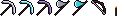
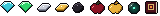
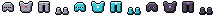
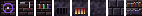
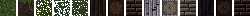
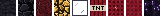

Проклятый камень

Холодные своды подземелий, кирпичи цвета запёкшейся крови и обсидиан с фиолетовыми искрами.
СкачатьСветящиеся руды

Самоцветы мерцают в тёмном камне, и их видно даже в самой глубокой шахте.
СкачатьМёртвый лес

Почерневшее дерево, поросшая мхом кора и пепельный песок с тлеющими угольками.
СкачатьКлинки тьмы

Мечи с камнем в гарде и кожаной рукоятью. На незеритовом клинке светятся руны.
СкачатьАрсенал героя

Инструменты для походов в подземелья: кирки и топоры с тёмной рукоятью, лук с красными наконечниками и факел.
СкачатьСокровища подземелий

Всё, что можно найти в сундуках: самоцветы, слитки, кровавое яблоко, жемчуг Края в виде глаза, книга заклинаний и блоки с выгравированными рунами.
СкачатьДоспехи рыцаря

Двенадцать предметов брони. У шлемов светятся глаза в прорези, а на нагруднике сияет камень.
СкачатьМастерская алхимика

На верстаке магический круг, на стене молот и кинжал, на полке зелья. Печь светится огнём, когда в ней что-то плавится.
СкачатьТёмная чаща

Густой мрачный лес: тёмная трава, листва с просветами, пепельные берёзы и почти чёрный дуб.
СкачатьПодземное царство

Самые глубокие пещеры и Незер: тяжёлый сланец, кровавый незеррак и обсидиан, который плачет фиолетовыми слезами.
СкачатьНичего не найдено. Попробуй другое слово.
Хочешь всё сразу? Скачай общий пак со всеми текстурами.